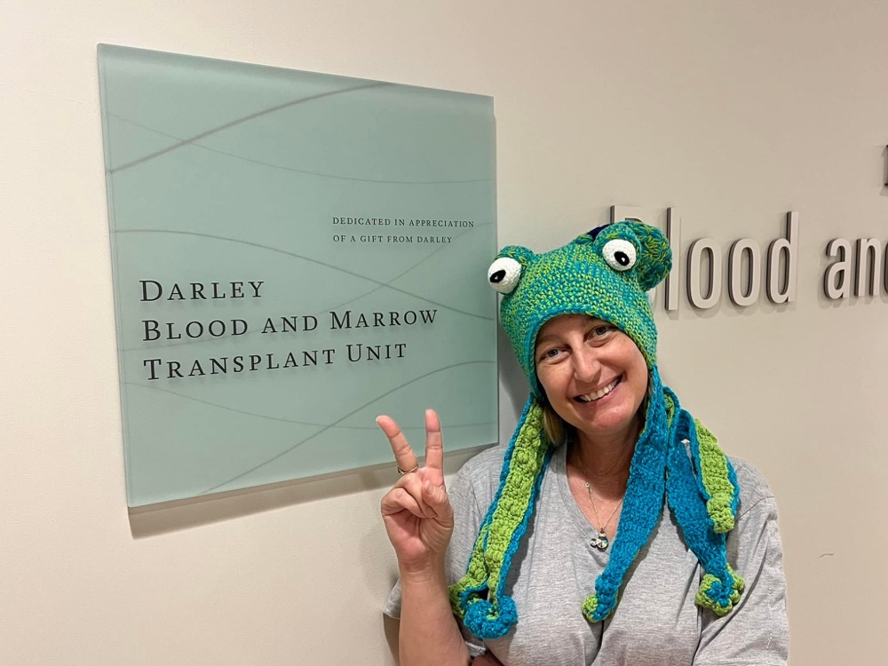

The two-point-four
Some numbers I don't forget.
“There is never a normal day around her — everything is special.”
— Mikala, one of my bonus kidsJanuary 2025
After weeks of unexplained illness, my hemoglobin came back at 2.4. Normal for a woman is around 12. Nurses who had worked that floor for years told me they had never seen anyone walk in at that number — and I had walked in.
It was also my grandson Jaxon's birthday. I called him from the room and sang to him anyway, because you don't skip that.
(2.4 is the number that hit the family group chat that day. My actual chart says 2.7. Either way, not a number you want next to your name.)
“She got diagnosed on Jaxon’s birthday, but she didn’t miss calling him to sing to him.”
— Mikala, one of my bonus kidsChemo & the search
Five weeks of inpatient induction chemo brought remission. Months of maintenance treatment followed while doctors searched for a stem cell donor for me — including one match that fell through at the last minute.
August 2025 — Transplant
A second donor turned out to be a rare 12-out-of-12 match. I spent nearly four months in the hospital and came through the critical 100-day window with minimal complications.
Right now
I'm in remission, living with rheumatoid arthritis from the chemo, and racing the clock to live fully in the time I've been given — while helping others just starting this same fight.


Remission is not the same as being cured. My leukemia carries higher-risk mutations, and with AML, most relapses after transplant happen within the first two years. In January 2025 I was days from a coma. I know exactly how fast this can move.
So this isn't a victory lap. It's real, uncertain time, and we've decided not to sit around waiting to find out how much of it there is.
I post the bad days too. There's a photo of me on the transplant unit in a frog hat, and one of me pulling a face in an oxygen mask. I've really been through it, and I'm still laughing — that's the part I want other patients to see.
Most of the people who find me on TikTok are just starting the road I've already walked. So I tell them what's coming, what helped me, and what I wish someone had told me.
So we're doing it all now. Everything we can, while I can. If the remission lasts longer than expected, no one will regret having lived fully in the meantime — and we'll be the first to stop asking for help. But most of what we do together right now is likely the only time, or the last time, I get to live it. That's why the timing on the things below actually matters.